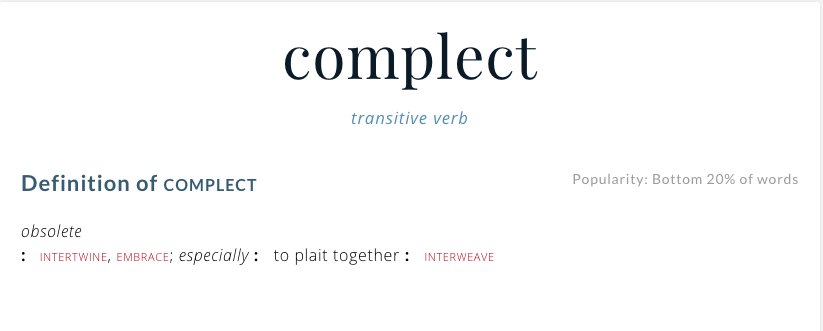
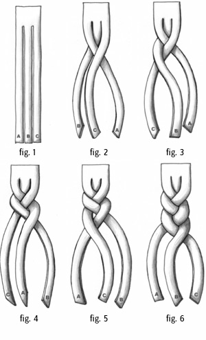

The Never Changing Face of Immutability
Chris Howe-Jones
@agile_geek
15th December 2015
Warning!!
- There will be a Lisp!
- There will be Entomology!
- There will be History!
The Never Changing Face of Immutability

Who am I?
Name: Chris Howe-Jones
Job Title: Technical Navigator
Twitter: @agile_geek
Github: github.com/chrishowejones
Blog: chrishowejones.wordpress.com
Credentials
- 28 years of pushing data around
- Procedural/OOP/FP
- Architecture & Design
- RAD/Agile/Lean
- CTO
History Lesson

Once upon a time..

Book Keeping
- List of entries in a ledger
- No 'crossing out'!
Dawn of Computing

- Math
- Transient storage
60's-90's

- Spot the expense?
- Memory
- Tape
- Disk
21st Century

Spot the expense?
- Developers
Cheap resources: SSD/Disk, Memory, CPU
And..

In place computing

- Update data in place
- Reuse expensive real estate
RDBMS

- Data updated
- Values overwritten
- Reuse memory and disk
Result?
In place oriented programming (PLOP) relies on…
Mutation

Which leads to..

Complect

- Complecting Identity & Value
- Especially RDBMS, OOP
- Pessimistic concurrency strategies
What's changed?

- Computing capacity has increased by a million fold!
Immutability (and values) to the rescue!
Values

- Values are generic
- Values are easy to fabricate
- Drives reuse
- Values aggregate to values
- Distributable
Isn't copying values inefficient?

- Structural sharing
- For example in Clojure:
- persistent bit-partitioned vector trie
- 32 node tries
- Wide shallow trees
What does it look like?
- Immutable by default
- Explicit state change
- Database as a value
ClojureScript on the client
(def initial-state {:event {:event/name "" :event/speaker ""} :server-state nil})
(defn- event-form [ui-channel {:keys [event/name event/speaker] :as event}] [:table.table [:tr [:td [:label "Event name:"]] [:td [:input {:type :text :placeholder "Event name..." :defaultValue event/name :on-change (send-value! ui-channel m/->ChangeEventName)}]]] [:tr [:td [:label "Speaker:"]] [:td [:input {:type :text :placeholder "Speaker..." :defaultValue event/speaker :on-change (send-value! ui-channel m/->ChangeEventSpeaker)}]]] [:tr [:td [:button.btn.btn-success {:on-click (send! ui-channel (m/->CreateEvent))} "Go"]]]])
(defrecord ChangeEventName [name]) (defrecord ChangeEventSpeaker [speaker]) (defrecord CreateEvent [event]) (defrecord CreateEventResults [body])
(extend-protocol Message m/ChangeEventName (process-message [{:keys [name]} app] (assoc-in app [:event :event/name] name))) ;; redacted for clarity ... (extend-protocol EventSource m/CreateEvent (watch-channels [_ {:keys [event] :as app}] #{(rest/create-event event)})) (extend-protocol Message m/CreateEventResults (process-message [response app] (assoc app :server-state (-> response :body))))
Efficiency

Clojure on the server
(defn- handle-query [db-conn] (fn [{req-body :body-params}] {:body (case (:type req-body) :get-events (data/get-events db-conn) :create-event (data/create-entity db-conn (:txn-data req-body)))})) (defn app [dbconn] (-> (routes (GET "/" [] home-page) (POST "/q" [] (handle-query dbconn)) (resources "/")) (wrap-restful-format :formats [:edn :transit-json]) (rmd/wrap-defaults (-> rmd/site-defaults (assoc-in [:security :anti-forgery] false)))))
Datomic for Data

- App get's its own query, comms, memory- Each App is a peer
Database as a value
| Entity | Attribute | Value | Time |
|---|---|---|---|
| Fiona | likes | Ruby | 01/06/2015 |
| Dave | likes | Haskell | 25/09/2015 |
| Fiona | likes | Clojure | 15/12/2015 |
- Effectively DB is local
- Datalog query language
[:find ?e :where [?e :likes “Clojure”]]
Schema
;;event { :db/id #db/id[:db.part/db] :db/ident :event/name :db/cardinality :db.cardinality/one :db/valueType :db.type/string :db/unique :db.unique/identity :db.install/_attribute :db.part/db } { :db/id #db/id[:db.part/db] :db/ident :event/description :db/cardinality :db.cardinality/one :db/valueType :db.type/string :db.install/_attribute :db.part/db } { :db/id #db/id[:db.part/db] :db/ident :event/location :db/cardinality :db.cardinality/one :db/valueType :db.type/ref :db.install/_attribute :db.part/db } ...
;;location { :db/id #db/id[:db.part/db] :db/ident :location/postCode :db/cardinality :db.cardinality/one :db/valueType :db.type/string :db.install/_attribute :db.part/db } { :db/id #db/id[:db.part/db] :db/ident :location/description :db/cardinality :db.cardinality/one :db/valueType :db.type/string :db.install/_attribute :db.part/db } ...
Persistence
(defn create-entity "Takes transaction data and returns the resolved tempid" [conn tx-data] (let [had-id (contains? tx-data ":db/id") data-with-id (if had-id tx-data (assoc tx-data :db/id #db/id[:db.part/user -1000001])) tx @(d/transact conn [data-with-id])] (if had-id (tx-data ":db/id") (d/resolve-tempid (d/db conn) (:tempids tx) (d/tempid :db.part/user -1000001)))))
(defn get-events [db] (d/pull-many db [:*] (->> (d/q '{:find [?event-id] :where [[?event-id :event/name]]} db) (map first))))
Conclusion?

- Immutability simplifies
- State as function call stack
- Mostly pure functions
- Easier to test & reason about
- Time as first class concept
- Easier to distribute
Resources
- Rich Hickey talks -
- 'The Value of Values'
- 'The Language of the System'
- 'Simple Made Easy'
- 'Clojure, Made Simple'
- 'The Database as a Value'
- 'The Language of Systems'
- Moseley and Marks - Out of the Tar Pit
- Kris Jenkins
- 'ClojureScript - Architecting for Scale' (Clojure eXchange 2015)